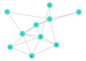

GNNs in 16 lines
As has been mentioned in Šimon Mandlík , Tomáš Pevný (2020), multiple instance learning is an essential piece for implementing message passing inference over graphs, the main concept behind spatial Graph Neural Networks (GNNs). It is straightforward and quick to achieve this with Mill.jl. We begin with some dependencies:
using Flux, LightGraphs, StatisticsLet's assume a graph g, in this case created by barabasi_albert function from LightGraphs.jl
julia> g = barabasi_albert(10, 3, 2)
{10, 14} undirected simple Int64 graph
Furthermore, let's assume that each vertex is described by seven features stored in a matrix X:
julia> X = ArrayNode(randn(Float32, 7, 10))
7×10 ArrayNode{Array{Float32,2},Nothing}:
0.2185985 1.6491349 -2.262881 … -0.32859078 0.94764924
-0.06988894 1.3115915 -0.08250728 0.6582578 -0.6531429
-1.5603738 -0.8084238 -1.2387911 1.2344556 -0.95609605
-2.513728 0.1319387 -0.5660408 0.1577587 0.52485347
-0.9105975 -0.5989876 0.13669732 -0.3624258 -0.14980601
-0.18041295 0.45285374 1.6021761 … -1.6111299 -0.987818
-0.425876 -0.38272107 -0.18863285 -1.3827578 0.34192944We use ScatteredBags from Mill.jl to encode neighbors of each vertex. In other words, each vertex is described by a bag of its neighbors. This information is conveniently stored in fadjlist field of g, therefore the bags can be constructed as:
julia> b = ScatteredBags(g.fadjlist)
ScatteredBags{Int64}([Int64[], [4, 5, 6, 7], [4], [2, 3, 5, 7, 8, 9], [2, 4, 6, 10], [2, 5], [2, 4, 8], [4, 7, 9, 10], [4, 8], [5, 8]])Finally, we create two models. First model called lift will pre-process the description of vertices to some latent space for message passing, and the second one will realize the message passing itself, which we will call mp:
julia> lift = reflectinmodel(X, d -> Dense(d, 10), d -> SegmentedMean(d))
ArrayModel(Dense(7, 10))
julia> U = lift(X)
10×10 ArrayNode{Array{Float32,2},Nothing}:
-0.30817318 -0.25121325 1.3518517 … -0.46176526 -0.6437645
1.6424092 0.3915833 -0.08751214 0.6381415 -0.06514694
0.6073281 -0.3304782 2.2735612 -0.51061743 -1.4044203
-2.1429942 -1.4363223 -0.9800633 -0.09688201 0.05063191
-1.6064042 -0.8159873 -1.1003122 -0.48423412 -0.15719895
-0.6086549 -0.22757578 0.30467874 … -1.3891561 0.258892
-0.3773173 -0.06864434 -0.7586922 1.0430982 0.57911694
2.2107005 0.59330475 -0.08743848 -0.2010595 1.0136333
-1.6390649 -0.8398425 -1.1706927 1.4457157 0.030056318
-1.7062736 0.036592808 -0.1776106 -0.83334655 0.17492357
julia> mp = reflectinmodel(BagNode(U, b), d -> Dense(d, 10), d -> SegmentedMean(d))
BagModel … ↦ ⟨SegmentedMean(10)⟩ ↦ ArrayModel(Dense(11, 10))
└── ArrayModel(Dense(10, 10))Notice that BagNode(U, b) now essentially encodes vertex features as well as the adjacency matrix. This also means that one step of message passing algorithm can be realized as:
julia> Y = mp(BagNode(U, b))
10×10 ArrayNode{Array{Float32,2},Nothing}:
0.0 0.4111194 0.41929135 -0.4175798 … -0.02428412 -0.0841181
0.0 0.47364208 0.5893076 0.0006594864 0.35088834 0.005531847
0.0 -0.34855664 0.4096775 0.1424849 -0.18652503 -0.22099797
0.0 0.46949098 0.17294975 0.07484052 -0.00847537 0.08684046
0.0 -1.4826896 -1.029515 -0.61058146 -0.7886891 -0.41610524
0.0 -0.12850828 -0.3516644 -0.18525659 … -0.15660898 -0.09482195
0.0 0.10702785 0.1451302 0.36692208 0.011536911 0.6119023
0.0 -0.52067935 0.7785525 -0.6902077 -0.05962513 -0.66548026
0.0 0.063599885 0.5098485 -0.37655705 0.22035794 -0.22527969
0.0 0.34532076 0.7489422 0.22698404 0.8515919 0.13558856and it is differentiable, which can be verified by executing:
julia> gradient(() -> sum(sin.(mp(BagNode(U, b)).data)), Flux.params(mp))
Grads(...)If we put everything together, the GNN implementation is implemented in the following block of code (16 lines of mostly sugar).
struct GNN{L,M, R}
lift::L
mp::M
m::R
end
Flux.@functor GNN
function mpstep(m::GNN, U::ArrayNode, bags, n)
n == 0 && return(U)
mpstep(m, m.mp(BagNode(U, bags)), bags, n - 1)
end
function (m::GNN)(g, X, n)
U = m.lift(X)
bags = Mill.ScatteredBags(g.fadjlist)
o = mpstep(m, U, bags, n)
m.m(vcat(mean(o.data, dims = 2), maximum(o.data, dims = 2)))
endAs it is the case with whole Mill.jl, even this graph neural network is properly integrated with Flux.jl ecosystem and suports automatic differentiation:
zd = 10
f(d) = Chain(Dense(d, zd, relu), Dense(zd, zd))
agg(d) = SegmentedMeanMax(d)
gnn = GNN(reflectinmodel(X, f, agg),
BagModel(f(zd), agg(zd), f(2zd + 1)),
f(2zd))julia> gnn(g, X, 5)
10×1 Array{Float32,2}:
-0.0070893215
-0.06451633
-0.5004246
0.43785498
-0.22833455
0.0062047085
0.3274489
-0.20463222
-0.6573593
-0.42298603
julia> gradient(() -> gnn(g, X, 5) |> sum, Flux.params(gnn))
Grads(...)The above implementation is surprisingly general, as it supports an arbitrarily rich description of vertices. For simplicity, we used only vectors in X, however, any Mill.jl hierarchy is applicable.
To put different weights on edges, one can use WeightedBagNodes instead.